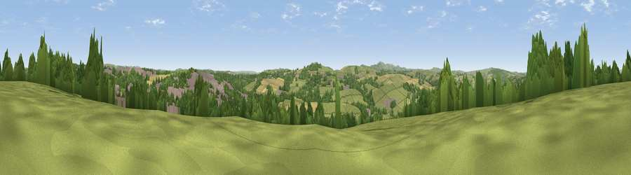

Viewpoint near Bodmin
#20363 in England · top 43% of its area beats it · near Bodmin · access?Where it is
The exact computed spot (SX 08625 65875). Click the marker for map links.
Public access: no public right of way or access land is recorded at this exact spot — it may be on private land. Computed from Natural England's CRoW access layer and OpenStreetMap rights of way — not the legal definitive map. Always verify locally.
The view, rendered

A 360° render of this exact spot computed from the terrain model, tree cover and land cover — summer colours, afternoon light, calibrated against photographs of famous viewpoints. Real trees, hedges and buildings will differ in detail.
The panorama
Grey silhouette: terrain skyline in each direction (720 bearings, Earth curvature and refraction included). Dashed green: skyline with trees (+15 m) and buildings (+8 m) as obstacles. Blue strip: how far the ground is visible on each bearing.
Where the view opens
Wedge length = distance to the farthest visible ground on that bearing (vegetation-aware). Rings at 10, 25 and 50 km.
What fills the view
41% grassland · 40% woodland · 12% cropland · 6% built-up
Angular shares of the visible panorama (visual magnitude), not map area. Landscape diversity 0.51 (0–1 Shannon).
Key numbers
More beautiful places nearby
The staircase of upgrades: each row has a higher view potential than everything closer. Driving times are estimates from straight-line distance, calibrated against real road routing — check an actual route before setting out.
| Place | Direction | Drive | Score |
|---|---|---|---|
| Long Downs | ENE · 3 km | ~7 min | 52.2 |
| Viewpoint near Lanivet | SSW · 3 km | ~8 min | 73.1 |
| Berry Down | ENE · 11 km | ~22 min | 73.5 |
| Viewpoint near Stenalees | SW · 12 km | ~22 min | 88.0 |
| Viewpoint near Crackington Haven | N · 29 km | ~45 min | 88.1 |
| Viewpoint near Combe Martin | NNE · 97 km | ~121 min | 88.9 |
| Holdstone Hill | NNE · 98 km | ~122 min | 90.2 |
| The Knoll | E · 146 km | ~169 min | 91.0 |
50.46140, -4.69769 · source: screening · position refined by local search. Computed location — check access rights before visiting.